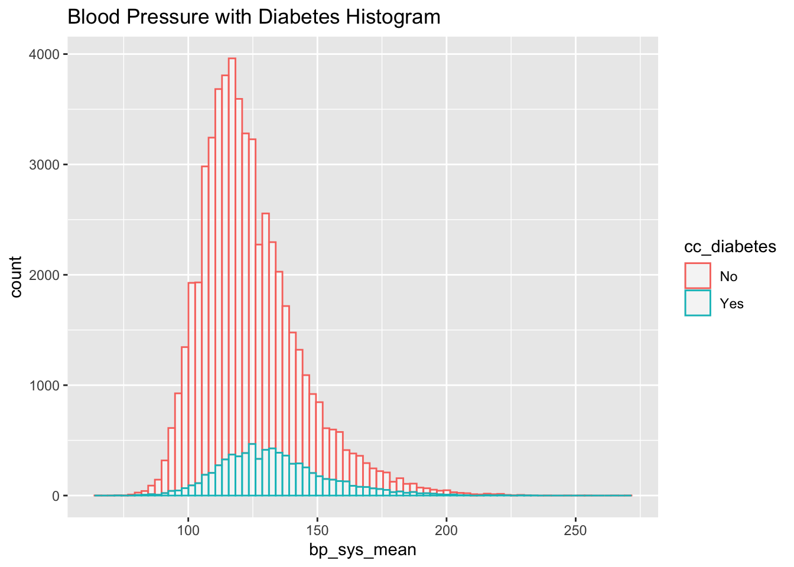
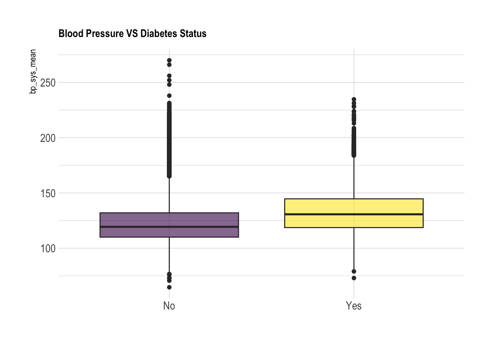
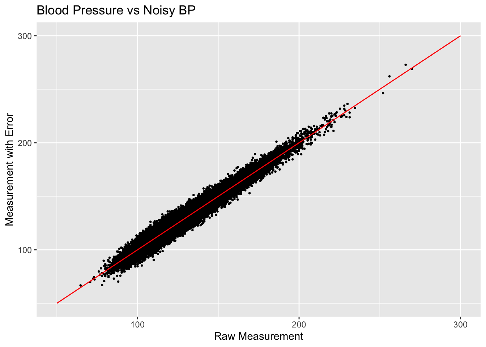
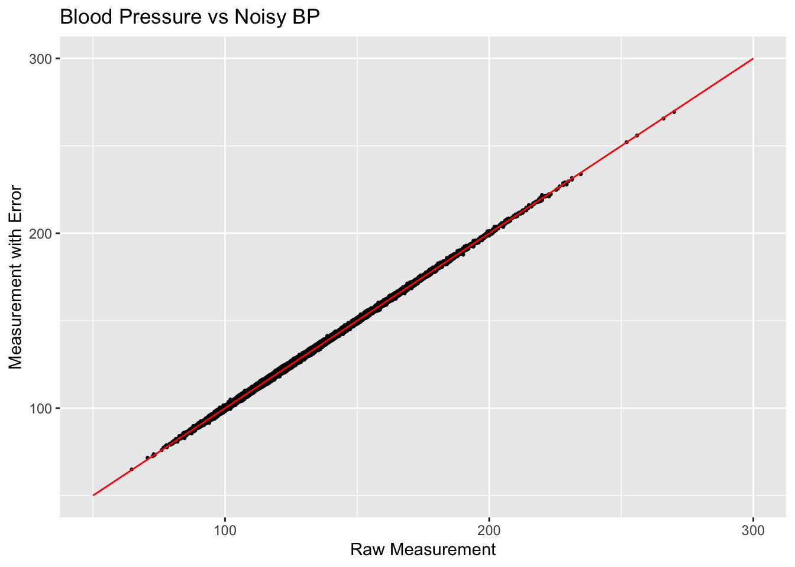
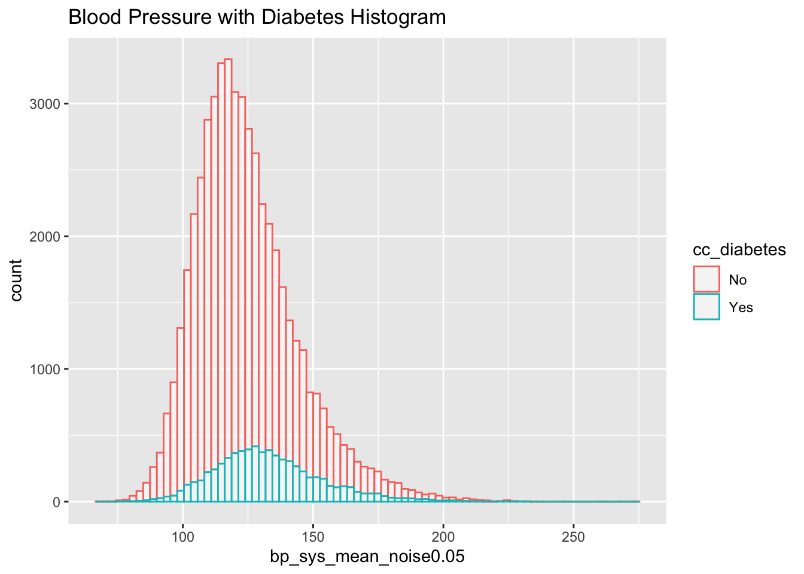
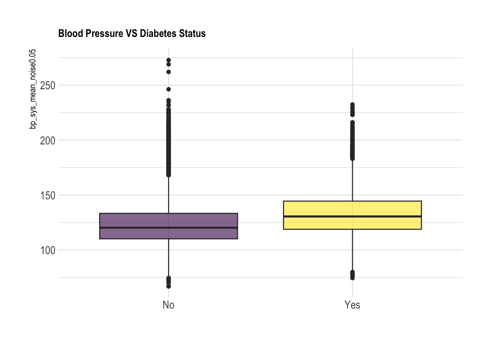

library(dplyr)
library(tidyverse)
library(tibble)
library(ggplot2)
library(knitr)
library(hrbrthemes)
library(viridis)
library(devtools)
#using data specified in this github repository:
install_github("jhs-hwg/cardioStatsUSA")
library(cardioStatsUSA)6 Creating “Noisy” Data
#to prevent errors, exclude the rows with na:
used_vars = c('cc_diabetes', 'bp_sys_mean', 'demo_age_years', 'demo_race', 'demo_gender', 'cc_bmi', 'cc_smoke', 'bp_med_use')
clean_nhanes <- nhanes_data[complete.cases(nhanes_data[,..used_vars]), ]Sample randomly subset n=50 (with 13% as yes)
In normal usage of measurement error techniques, the data is assumed to have systematic(?) error arising from measurement of the variables which we aim to remedy. In our case, we believe that the NHANES data has no measurement error, so we will instead simulate error by adding in random noise to the existing data to create a “noisy” dataset.
First, let’s remind ourselves the relationship between blood pressure and diabetes visually:
nrow(clean_nhanes$cc_diabetes == "Yes")NULLnhanes_data %>% drop_na(cc_diabetes) %>%
ggplot(aes(x=bp_sys_mean, color=cc_diabetes)) +
geom_histogram(fill="white", alpha=0.5, bins = 80) +
ggtitle("Blood Pressure with Diabetes Histogram")Warning: Removed 3265 rows containing non-finite outside the scale range
(`stat_bin()`).
nhanes_data %>% drop_na(cc_diabetes) %>%
ggplot(aes(x=cc_diabetes, y=bp_sys_mean, fill=cc_diabetes)) +
geom_boxplot() +
scale_fill_viridis(discrete = TRUE, alpha=0.6) +
theme_ipsum() +
theme(
legend.position="none",
plot.title = element_text(size=11)
) +
ggtitle("Blood Pressure VS Diabetes Status") +
xlab("")Warning: Removed 3265 rows containing non-finite outside the scale range
(`stat_boxplot()`).
We can also use a t-test to evaluate whether or not the two populations (diabetes and non-diabetes) have significantly different distributions of blood pressures:
nhanes_sys_diabetes <- nhanes_data %>% select(cc_diabetes, bp_sys_mean) %>% drop_na(bp_sys_mean) %>% drop_na(cc_diabetes)
diabetes_test <- t.test(bp_sys_mean ~ cc_diabetes, data = nhanes_sys_diabetes)
diabetes_test
Welch Two Sample t-test
data: bp_sys_mean by cc_diabetes
t = -40.314, df = 9221.3, p-value < 2.2e-16
alternative hypothesis: true difference in means between group No and group Yes is not equal to 0
95 percent confidence interval:
-10.84351 -9.83791
sample estimates:
mean in group No mean in group Yes
122.7845 133.1252 Now we want to add in noise to the data to simulate making the measurements less accurate. We can achieve this by sampling from a normal distribution centered on 0 and adding the resulting value to the original data measurement. This will mask the patient’s true blood pressure value.
We will experiment with 3 values for “reliability”: the higher the value, the lower the variance of the distribution from which we sample noise, and the closer to the original data the noisy data tends to be.
First, let’s try a value of 0.3:
reliability <- 0.3 ### Set up measurement error with 0.5 Attenuation coef
sigma_u_sq <- 1/reliability - 1
sigma_u_sq[1] 2.333333 sigma_u_sq^0.5[1] 1.527525We can see that a low reliability value results in a variance of 2.33 and a standard deviation of about 1.53. Next, let’s increase reliability to 0.5
reliability <- 0.5
sigma_u_sq <- 1/reliability - 1
sigma_u_sq[1] 1 sigma_u_sq^0.5[1] 1When we increase the reliability, the variance and standard deviation both decrease to 1. This will ultimately result in a bit less change to the original data.
Finally, let’s look at reliability of 0.7
reliability <- 0.7
sigma_u_sq <- 1/reliability - 1
sigma_u_sq[1] 0.4285714 sigma_u_sq^0.5[1] 0.6546537With a variance of 0.43 and standard deviation of 0.65, this reliability value creates the least noise compared to 0.3 and 0.5.
Now, let’s actually transform the data we have and visualize:
(***Maybe we should add noise with a Gaussian not centered at 0? Or take a smaller subset of the data? I think there’s so much data that no matter how much noise is added, the true means of each group will still be clear and it will still be a significant difference*)
n = nrow(clean_nhanes)
reliability <- 0.05 ### Set up measurement error with 0.5 Attenuation coef
sigma_u_sq <- 1/reliability - 1
clean_nhanes$bp_sys_mean_noise0.05 <- clean_nhanes$bp_sys_mean + rnorm(n, sd=sigma_u_sq^0.5)
reliability <- 0.5
sigma_u_sq <- 1/reliability - 1
clean_nhanes$bp_sys_mean_noise0.5 <- clean_nhanes$bp_sys_mean + rnorm(n, sd=sigma_u_sq^0.5)
reliability <- 0.7
sigma_u_sq <- 1/reliability - 1
clean_nhanes$bp_sys_mean_noise0.7 <- clean_nhanes$bp_sys_mean + rnorm(n, sd=sigma_u_sq^0.5)Let’s visualize the difference between the raw BP measurements and the measurements with new error added in:
scatterplot <- ggplot(clean_nhanes, aes(x=bp_sys_mean, y=bp_sys_mean_noise0.05)) +
geom_point(size=0.5) +
ggtitle("Blood Pressure vs Noisy BP") +
xlab("Raw Measurement") +
ylab("Measurement with Error")
scatterplot + annotate("segment", x = 50, xend = 300, y = 50, yend = 300,
colour = "red")
scatterplot <- ggplot(clean_nhanes, aes(x=bp_sys_mean, y=bp_sys_mean_noise0.7)) +
geom_point(size=0.5) +
ggtitle("Blood Pressure vs Noisy BP") +
xlab("Raw Measurement") +
ylab("Measurement with Error")
scatterplot + annotate("segment", x = 50, xend = 300, y = 50, yend = 300,
colour = "red")
Comparing the values created by setting reliability to 0.05 and 0.7, we can see that the spread of the scatter plot is much different. The added amount of noise in the high reliability case does not significantly shift the data points very far off from their original positions.
We can also measure the “spread” of the noise by calculating the correlation coefficient. This will give us a numerical value for how linked the two variables are:
print(paste("Reliability 0.05 Correlation Coefficient:", cor(clean_nhanes$bp_sys_mean, clean_nhanes$bp_sys_mean_noise0.05))) [1] "Reliability 0.05 Correlation Coefficient: 0.975537945481947"#print(paste("Reliability 0.3 Correlation Coefficient:", cor(clean_nhanes$bp_sys_mean, clean_nhanes$bp_sys_mean_noise0.3)))
print(paste("Reliability 0.5 Correlation Coefficient:", cor(clean_nhanes$bp_sys_mean, clean_nhanes$bp_sys_mean_noise0.5))) [1] "Reliability 0.5 Correlation Coefficient: 0.998658347258334"print(paste("Reliability 0.7 Correlation Coefficient:", cor(clean_nhanes$bp_sys_mean, clean_nhanes$bp_sys_mean_noise0.7))) [1] "Reliability 0.7 Correlation Coefficient: 0.999432369882829"Now, we will try to fit a linear regression model to estimate the raw measurement from the “error”-full measurement.
error_model_0.005 <- glm(bp_sys_mean ~ bp_sys_mean_noise0.05, data = clean_nhanes, family = 'gaussian')
summary(error_model_0.005)
Call:
glm(formula = bp_sys_mean ~ bp_sys_mean_noise0.05, family = "gaussian",
data = clean_nhanes)
Coefficients:
Estimate Std. Error t value Pr(>|t|)
(Intercept) 6.1261989 0.1183597 51.76 <2e-16 ***
bp_sys_mean_noise0.05 0.9507169 0.0009377 1013.84 <2e-16 ***
---
Signif. codes: 0 '***' 0.001 '**' 0.01 '*' 0.05 '.' 0.1 ' ' 1
(Dispersion parameter for gaussian family taken to be 18.15678)
Null deviance: 19610532 on 52196 degrees of freedom
Residual deviance: 947693 on 52195 degrees of freedom
AIC: 299454
Number of Fisher Scoring iterations: 2#error_model_0.3 <- glm(bp_sys_mean ~ bp_sys_mean_noise0.3, data = clean_nhanes, family = 'gaussian')
#summary(error_model_0.3)
error_model_0.5 <- glm(bp_sys_mean ~ bp_sys_mean_noise0.5, data = clean_nhanes, family = 'gaussian')
summary(error_model_0.5)
Call:
glm(formula = bp_sys_mean ~ bp_sys_mean_noise0.5, family = "gaussian",
data = clean_nhanes)
Coefficients:
Estimate Std. Error t value Pr(>|t|)
(Intercept) 0.3427951 0.0285477 12.01 <2e-16 ***
bp_sys_mean_noise0.5 0.9972767 0.0002263 4405.98 <2e-16 ***
---
Signif. codes: 0 '***' 0.001 '**' 0.01 '*' 0.05 '.' 0.1 ' ' 1
(Dispersion parameter for gaussian family taken to be 1.007486)
Null deviance: 19610532 on 52196 degrees of freedom
Residual deviance: 52586 on 52195 degrees of freedom
AIC: 148522
Number of Fisher Scoring iterations: 2#bp_sys_mean_noise0.005
error_model_0.7 <- glm(bp_sys_mean ~ bp_sys_mean_noise0.7, data = clean_nhanes, family = 'gaussian')
summary(error_model_0.7)
Call:
glm(formula = bp_sys_mean ~ bp_sys_mean_noise0.7, family = "gaussian",
data = clean_nhanes)
Coefficients:
Estimate Std. Error t value Pr(>|t|)
(Intercept) 0.1140605 0.0185917 6.135 8.58e-10 ***
bp_sys_mean_noise0.7 0.9991003 0.0001474 6777.691 < 2e-16 ***
---
Signif. codes: 0 '***' 0.001 '**' 0.01 '*' 0.05 '.' 0.1 ' ' 1
(Dispersion parameter for gaussian family taken to be 0.4264151)
Null deviance: 19610532 on 52196 degrees of freedom
Residual deviance: 22257 on 52195 degrees of freedom
AIC: 103643
Number of Fisher Scoring iterations: 2clean_nhanes %>%
ggplot(aes(x=bp_sys_mean_noise0.05, color=cc_diabetes)) +
geom_histogram(fill="white", alpha=0.5, bins = 80) +
ggtitle("Blood Pressure with Diabetes Histogram")
clean_nhanes %>%
ggplot(aes(x=cc_diabetes, y=bp_sys_mean_noise0.05, fill=cc_diabetes)) +
geom_boxplot() +
scale_fill_viridis(discrete = TRUE, alpha=0.6) +
theme_ipsum() +
theme(
legend.position="none",
plot.title = element_text(size=11)
) +
ggtitle("Blood Pressure VS Diabetes Status") +
xlab("")
#diabetes_test <- t.test(bp_sys_mean_noise0.005 ~ cc_diabetes, data =clean_nhanes)
#ddiabetes_test